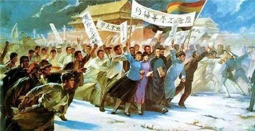

五四运动

五四运动，是1919年5月4日发生在北京的一场以青年学生为主，广大群众、市民、工商人士等阶层共同参与的，通过示威游行、请愿、罢工、暴力对抗政府等多种形式进行的爱国运动，是中国人民彻底的反对帝国主义、封建主义的爱国运动。他们打出“誓死力争，还我青岛”、“收回山东权利”、“拒绝在巴黎和约上签字”、“废除二十一条”、“抵制日货”、“宁肯玉碎，勿为瓦全”、“外争主权，内除国贼”等口号 ，并且要求惩办交通总长曹汝霖、制局总裁陆宗舆、驻日公使章宗祥，学生游行队伍移至曹宅，痛打了章宗祥，北京高等师范学校数理部的匡互生第一个冲进曹宅，并带头火烧曹宅，引发“火烧赵家楼”事件。
五四运动是五四运动是一场伟大的群众爱国运动。也是一场深刻的思想解放运动，它解开了新民主主义革命的序幕，从此无产阶级登上了政治舞台，民众的力量得到了广泛的发动，为之后的中国共产党的成立创造了条件。